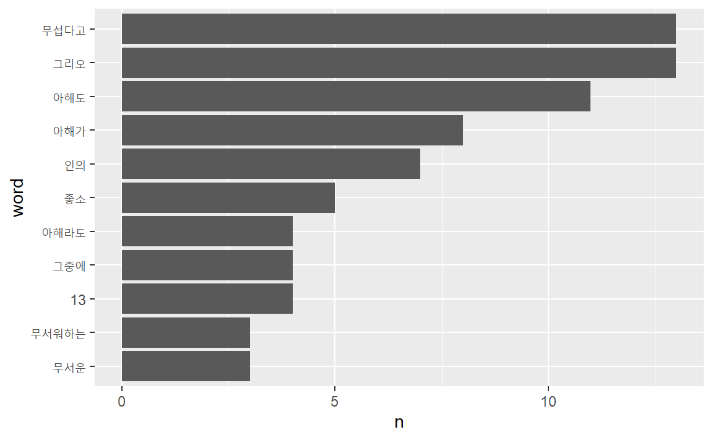

1 . 정제(전처리)
정제는 자료정보지식지혜(DIKW, Data/Information/Knowledge, Wisdom)위계론의 1차부호화 단계에 해당한다. 정제를 거친 자료를 분석하는 2차부호화 과정을 거쳐 자료가 정보로 가공된다. 광물 정제과정에 비유할 수 있다. 금광석 등 광물을 캐면 먼저 잘게 분쇄한다. 불순물을 제거하고, 규격화한 금괴로 가공한다. 마찬가지로 원자료를 분석할 수 있는 단위로 분쇄(토큰화)하고, 불순물을 제거(불용어 제거)한 다음, 규격화한 양식으로 정규화한다.
- 토큰화
- 불용어제거
- 정규화

pkg_l <- c("tidyverse", "tidytext", "textdata")
purrr::map(pkg_l, require, ch = TRUE)## [[1]]
## [1] TRUE
##
## [[2]]
## [1] TRUE
##
## [[3]]
## [1] TRUE
1.1 토큰화
텍스트 원자료를 분석할 수 있도록 토큰(token)으로 잘게 나누는 단계다. 토큰의 단위는 분석 목적에 따라 글자, 단어, 엔그램(n-gram), 문장, 문단 등 다양하게 지정할 수 있다. tidytext 패키지 unnest_tokens() 함수에 인자를 달리하여 텍스트를 다양한 형태로 분절하여 후속작업을 할 수 있다.
unnest_tokens(df, output, input,
token = "words",
format = c("text", "man", "latex", "html", "xml"),
to_lower = TRUE, drop = TRUE, collapse = NULL, ...)토큰으로 나누는 단위는 분석의 목적에 따라 다양한 단어, 글자, 문장 등 다양한 수준으로 설정할 수 있다.
- “characters” 글자 단위
- “character_shingles” 복수의 글자 단위
- “words” 단어 단위
- “ngrams” 복수의 단어 단위
- “regex” 정규표현식으로 지정
tidytext패키지에서는 unnest_tokens()함수에서는 token =인자로 토큰 단위를 지정할 수 있다.
1.1.1 단어
unnest_tokens()함수에서 토큰의 기본값으로 설정된 단위는 단어(“words”)다.
text_v <-
"You still fascinate and inspire me.
You influence me for the better.
You’re the object of my desire, the #1 Earthly reason for my existence."
tibble(text = text_v) %>%
unnest_tokens(output = word, input = text,
token = "words")## # A tibble: 25 × 1
## word
## <chr>
## 1 you
## 2 still
## 3 fascinate
## 4 and
## 5 inspire
## 6 me
## # … with 19 more rows
1.1.2 글자 토큰
token =인자에 “characters”를 투입하면 글자 단위로 토큰화한다.
tibble(text = text_v) %>%
unnest_tokens(output = word,
input = text,
token = "characters") %>%
count(word, sort = TRUE)## # A tibble: 21 × 2
## word n
## <chr> <int>
## 1 e 20
## 2 t 10
## 3 o 8
## 4 r 8
## 5 i 7
## 6 n 7
## # … with 15 more rows
1.1.3 복수의 글자
복수의 글자를 토큰의 단위로 할 때는 “character_shingles”을 token =인자에 투입한다. 기본값은 3글자.
tibble(text = text_v) %>%
unnest_tokens(output = word,
input = text,
token = "character_shingles",
n = 4) %>%
count(word, sort = TRUE)## # A tibble: 104 × 2
## word n
## <chr> <int>
## 1 ence 2
## 2 ethe 2
## 3 reth 2
## 4 1ear 1
## 5 andi 1
## 6 arth 1
## # … with 98 more rows
1.1.4 복수의 단어(n-gram)
복수의 단어를 토콘 단위로 나눌 때는 token =인자에 “ngrams”인자를 투입한다. 기본값은3개이다.
tibble(text = text_v) %>%
unnest_tokens(output = word,
input = text,
token = "ngrams",
n = 4) %>%
count(word, sort = TRUE)## # A tibble: 22 × 2
## word n
## <chr> <int>
## 1 1 earthly reason for 1
## 2 and inspire me you 1
## 3 better you’re the object 1
## 4 desire the 1 earthly 1
## 5 earthly reason for my 1
## 6 fascinate and inspire me 1
## # … with 16 more rows
1.1.5 정규표현식
정규표현식(regex: regular expressions)을 이용하면, 토콘을 보다 다양한 방식으로 나눌 수 있다.
token =인자에 “regex”를 지정한다. pattern =에 정규표현식을 투입한다.
정규표현식에서 “new line”을 의미하는 "\n"를 이용해 토큰화할 경우 문장 단위로 토큰화할 경우, 수 있다. 만일 공백 단위로 토큰화한다면, 공백을 의미하는 "\\s"를 투입한다.
tibble(text = text_v) %>%
unnest_tokens(output = word,
input = text,
token = "regex",
pattern = "\n")## # A tibble: 3 × 1
## word
## <chr>
## 1 "you still fascinate and inspire me."
## 2 "you influence me for the better. "
## 3 "you’re the object of my desire, the #1 earthly reason f…
1.1.6 문서형식
format =인자를 format = c("text", "man", "latex", "html", "xml") 다양하게 적용해 토큰화하는 문서의 형식을 지정할 수 있다.
“html”문서를 토큰화해보자.
pp_html <- read_lines("https://www.gutenberg.org/files/1342/1342-h/1342-h.htm")
pp_html_df <- tibble(text = pp_html)
pp_html_df %>%
slice(1:5)## # A tibble: 5 × 1
## text
## <chr>
## 1 "<!DOCTYPE html PUBLIC \"-//W3C//DTD XHTML 1.0 Strict//EN…
## 2 "\"http://www.w3.org/TR/xhtml1/DTD/xhtml1-strict.dtd\">"
## 3 "<html xmlns=\"http://www.w3.org/1999/xhtml\" xml:lang=\"…
## 4 "<head>"
## 5 "<meta http-equiv=\"Content-Type\" content=\"text/html;ch…
pp_html_df %>%
unnest_tokens(word, text, format = "html") %>%
slice(1:5)## # A tibble: 5 × 1
## word
## <chr>
## 1 the
## 2 project
## 3 gutenberg
## 4 ebook
## 5 of
1.1.7 영어 소문자
영문은 대문자와 소문자 구분이 있다. to_lower =인자의 기본값은 TRUE다.
즉, to_lower = TRUE 이 기본설정이다.
FALSE를 로 지정하면 대문자를 모두 소문자로 변경하지 않는다.
영문문서에서 사람이름이나 지명을 구분해야 한다면 토큰화 과정에서
모든 단어를 소문자화하지 말아야 한다.
tibble(text = text_v) %>%
unnest_tokens(output = word,
input = text,
to_lower = FALSE)## # A tibble: 25 × 1
## word
## <chr>
## 1 You
## 2 still
## 3 fascinate
## 4 and
## 5 inspire
## 6 me
## # … with 19 more rows
1.1.8 문장부호
추가인자는 tokenizers함수로 전달해 다양한 설정을 할 수 있다.
예를 들어, strip_punct =인자에 FALSE를 투입하면,
문장부호를 제거하지 않는다.
tibble(text = text_v) %>%
unnest_tokens(output = word, input = text,
token = "words",
strip_punct = FALSE)## # A tibble: 30 × 1
## word
## <chr>
## 1 you
## 2 still
## 3 fascinate
## 4 and
## 5 inspire
## 6 me
## # … with 24 more rows
1.2 불용어 제거
불용어(stop words)는 말 그대로 사용하지 않는 단어다. 불용어를 문자 그대로 해석하면 사용하지 않는 단어에 국한된다. 넓은 의미로 해석하면, 사용빈도가 높아 분석에 의미가 없거나, 내용을 나타내는데 기여하지 않는 단어, 숫자, 특수문자, 구두점, 공백문자, 기호 등이 포함된다.
무엇이 불용어가 돼야 하는지는 상황에 따라 다르다. 에를 들어, 대명사는 대부분의 불용어사전에 불용어로 포함돼 있지만, 분석 목적에 따라서는 대명사는 분석의 핵심단위가 되기도 한다. 기호도 마찬가지다. 기호를 이용한 이모티콘은 문서의 의미를 전달하기 때문에 모든 기호를 일괄적으로 제거해서는 안된다.
앞서 제시한 연애편지를 문자 단위로 토큰화해 단어의 빈도를 계산해보자.
tibble(text = text_v) %>%
unnest_tokens(output = word,
input = text) %>%
count(word, sort = TRUE)## # A tibble: 19 × 2
## word n
## <chr> <int>
## 1 the 3
## 2 for 2
## 3 me 2
## 4 my 2
## 5 you 2
## 6 1 1
## # … with 13 more rows
count로 단어빈도를 계산한 결과를 보면 “the”가 3회, “for”, “me”, “my”, “you”가 각각 2회 사용됐다. 즉, 이 글은 너와 나에 대한 글이런 것을 알수 있다. 사랑고백이란 것이 너와 나의 일이므로 타당하다.
분석결과를 보면 단어빈도로 의미를 파악하는데 불필요한 단어도 있다. “the”, “for”, “of”, “and” 등과 같은 관사, 전치사, 접속사들처럼 자주 사용하는 단어들이다. 이런 단어는 불용어(stop words)로 처리해 분석대상에 제외하는 것이 보다 정확한 의미를 파악하는데 도움이 되는 경우도 있다.
불용어를 제거하는 방법은 크게 두가지가 있는데 혼용한다.
anti_join()불용어목록을 데이터프레임에 저장한 다음,anti_join()함수를 이용해 텍스트데이터프레임과 배제결합하는 방법이다. 두 데이터프레임에서 겹치는 행을 제외하고 결합(join)한다. 이 경우 불용어 목록에 포함된 행이 제외된다.filter()함수와str_detect()함수를 함께 이용해 불용어 지정해 걸러내는 방법이다. 불용어사전에 포함돼 있지 않는 단어를 제거할 때 이용한다.
1.2.1 불용어 사전
주로 사용되는 불용어목록은 불용어사전으로 제공된다. tidytext패키지는 stop_words에 불용어를 모아 놓았다. stop_words의 구조부터 살며보자.
kableExtra패키지를 이용하면 데이터프레임을 깔끔하게 출력할 수 있다.(사용법은 여기)
install.packages("kableExtra")데이터셋을 R세션에 올리는 함수는 data()함수다.
library(kableExtra)
data(stop_words)
stop_words %>% glimpse()## Rows: 1,149
## Columns: 2
## $ word <chr> "a", "a's", "able", "about", "above", "acc…
## $ lexicon <chr> "SMART", "SMART", "SMART", "SMART", "SMART…
stop_words %>%
slice( c(1:3, 701:703, 1001:1003) ) %>%
kbl() %>%
kable_classic(full_width = FALSE)| word | lexicon |
|---|---|
| a | SMART |
| a’s | SMART |
| able | SMART |
| during | snowball |
| before | snowball |
| after | snowball |
| parted | onix |
| parting | onix |
| parts | onix |
stop_words는 행이 1,149개(불용어 1,149개)이고, 열이 2개(word와 lexicon)인 데이터프레임이다. word열에 있는 단어가 불용어고, lexicon열에 있는 값은 불용어 용어집의 이름이다. tidytext패키지의 stop_words에는 세 개의 불용어 용어집(SMART, snowball, onix) 이 포함돼 있다. filter함수로 특정 용어집에 있는 불용어 사전만 골라 이용할 수 있다.
stop_words %>%
select(lexicon) %>%
unique()## # A tibble: 3 × 1
## lexicon
## <chr>
## 1 SMART
## 2 snowball
## 3 onix
불용어사전으로 불용어를 걸러낸 다음 단어빈도를 계산해보자.
data(stop_words)
tibble(text = text_v) %>%
unnest_tokens(output = word, input = text) %>%
anti_join(stop_words) %>%
count(word, sort = TRUE)## # A tibble: 10 × 2
## word n
## <chr> <int>
## 1 1 1
## 2 desire 1
## 3 earthly 1
## 4 existence 1
## 5 fascinate 1
## 6 influence 1
## # … with 4 more rows
결과를 보면 “you”등 대명사가 포함된 토큰은 모두 제거됐는데, “you’re”는 그대로 남아 있다. 불용어 사전에는 “you’re”로 홑따옴표(quotation mark)'를 이용했는데, 본문에는 “you’re”로 홑낫표(aphostrophe)’를 이용했기 때문이다. 불용어사전으로 본문의 “you’re”를 제거하기 위해서는 둘 중 한가지는 해야 한다. 본몬의 홑낫표를 홑따옴표로 변경하거나, 불용어사전을 수정한다.
1.2.2 본문 수정
먼저 본문 수정을 해보자.
tapo_v <- text_v %>%
str_replace_all("’", "'")
tibble(text = tapo_v) %>%
unnest_tokens(output = word, input = text) %>%
anti_join(stop_words) %>%
count(word, sort = TRUE)## # A tibble: 9 × 2
## word n
## <chr> <int>
## 1 1 1
## 2 desire 1
## 3 earthly 1
## 4 existence 1
## 5 fascinate 1
## 6 influence 1
## # … with 3 more rows
1.2.3 불용어 사전 수정
불용어 사전에 “you’re”를 추가해보자. 데이터프레임을 만들어 bind_rows()로 데이터프레임을 결합할수도 있고, add_row()로 불용사전에 열을 곧바로 추가할수도 있다.
먼저 add_row()로 행에 곧바로 추가하는 방법을 이용해보자. 추가됐는지 확인이 수월하도록 첫째행 전에 추가하자.
stop_words %>%
add_row(word = "you’re", lexicon = "NEW", .before = 1) %>%
head(3)## # A tibble: 3 × 2
## word lexicon
## <chr> <chr>
## 1 you’re NEW
## 2 a SMART
## 3 a's SMART
이번에는 데이터프레임을 결합해보자. 또한 숫자 “1”도 함께 불용어사전에 추가하자. 먼저 추가할 용어를 불용어사전과 같은 구조의 데이터프레임에 저장한다.
names(stop_words)## [1] "word" "lexicon"
stop_add <- tibble(word = c("you’re", "1"),
lexicon = "added")
stop_add## # A tibble: 2 × 2
## word lexicon
## <chr> <chr>
## 1 you’re added
## 2 1 added
bind_rows()함수로 불용어사전과 결합한다.
stop_words2 <- bind_rows(stop_words, stop_add)
stop_words2 %>% tail()## # A tibble: 6 × 2
## word lexicon
## <chr> <chr>
## 1 younger onix
## 2 youngest onix
## 3 your onix
## 4 yours onix
## 5 you’re added
## 6 1 added
새로 만든 불용어사전으로 정체한 후 단어 빈도를 계산해보자.
tibble(text = text_v) %>%
unnest_tokens(output = word, input = text) %>%
anti_join(stop_words2) %>%
count(word, sort = TRUE)## # A tibble: 8 × 2
## word n
## <chr> <int>
## 1 desire 1
## 2 earthly 1
## 3 existence 1
## 4 fascinate 1
## 5 influence 1
## 6 inspire 1
## # … with 2 more rows
“you’re”와 숫자가 모두 제거됐다.
1.2.4 고급 불용어 사전 수정
통상적으로 쓰이는 불용어 중에는 실은 문서의 의미를 파악하는데 중요한 단서를 제공하는 단어도 있다. “you” “me” “my” 등과 같은 대명사는 흔하게 사용되기 때문에 불용어로 분류되지만, 맥락를 파악하는데 중요한 역할을 하기도 한다. 불용어 사전에서 대명사를 찾아 불용어 사전에서 제거하자.
stop_words %>%
filter( str_detect(word, "(^i$|^i[:punct:]+|^mys*|^me$|mine)")) %>%
pull(word)## [1] "i" "i'd" "i'll" "i'm" "i've" "me"
## [7] "my" "myself" "i" "me" "my" "myself"
## [13] "i'm" "i've" "i'd" "i'll" "i" "me"
## [19] "my" "myself"
stop_words_pronoun <- stop_words %>%
filter(
!str_detect(word, "(^i$|^i[:punct:]+|^mys*|^me$|^mine$)")
)
stop_words_pronoun %>%
filter( str_detect(word, "^i")) %>%
pull(word)## [1] "ie" "if" "ignored" "immediate"
## [5] "in" "inasmuch" "inc" "indeed"
## [9] "indicate" "indicated" "indicates" "inner"
## [13] "insofar" "instead" "into" "inward"
## [17] "is" "isn't" "it" "it'd"
## [21] "it'll" "it's" "its" "itself"
## [25] "it" "its" "itself" "is"
## [29] "it's" "isn't" "if" "into"
## [33] "in" "if" "important" "in"
## [37] "interest" "interested" "interesting" "interests"
## [41] "into" "is" "it" "its"
## [45] "itself"
1.2.5 불용어 목록 만들기
제거하고 싶은 불용어를 최소화하고 싶을 때는 불용어 목록을 직접 만들수도 있다. “the, for, and”등이 포함된 불용어 목록을 만들어 정제해 보자. “the, for, and”등 불용어목록을 데이터프레임에 저장한 다음, anti_join()함수를 이용해 토큰데이터프레임과 배제결합한다.
stop_df <- tibble(word = c("the","for", "and"))
tibble(text = text_v) %>%
unnest_tokens(output = word, input = text) %>%
anti_join(stop_df) %>%
filter(!str_detect(word, "\\d+")) %>%
count(word, sort = TRUE)## # A tibble: 15 × 2
## word n
## <chr> <int>
## 1 me 2
## 2 my 2
## 3 you 2
## 4 better 1
## 5 desire 1
## 6 earthly 1
## # … with 9 more rows
1.2.6 dplyr 동사로 제거
dplyr 패키지 filter()함수를 이용해 불용어사전을 수정하지 않고 불용어를 추가로 제거할 수 있다.
예를 들어, 숫자를 불용어로 취급해 제거하는 상황에서 숫자를 불용어 사전에 넣지 말고 filter()로 걸러보자. 정규표현식(regex: regular expression)에서 숫자를 의미하는 [:digit:] 또는 \\d를 이용해 filter()함수와 str_detect()함수 및 부정연산자 !를 이용해 걸러낸다.
filter()함수를 str_detect()함수와 함께 이용하는 이유는 다음과 같다.
str_subset()함수는 패턴이 일치하는 문자를 출력하는 반면, str_detect()함수는 패턴이 일치하는 문자에 대한 논리값(TRUE or FALSE)을 출력한다.
df <- tibble(text = text_v) %>%
unnest_tokens(output = word,
input = text) %>%
anti_join(stop_words)
df$word %>% str_subset(pattern = "\\d+")## [1] "1"
df$word %>% str_detect(pattern = "\\d+")## [1] FALSE FALSE FALSE FALSE FALSE FALSE TRUE FALSE FALSE
## [10] FALSE
불용어를 제거한 다음 추가로 본문에서 숫자와 홑낫표”’“가 포함된 문제를 제거하자.
tibble(text = text_v) %>%
unnest_tokens(output = word,
input = text) %>%
anti_join(stop_words) %>%
filter(
!str_detect(word, pattern = "\\d+"),
!str_detect(word, pattern = "you’re")
) %>%
count(word, sort = TRUE)## # A tibble: 8 × 2
## word n
## <chr> <int>
## 1 desire 1
## 2 earthly 1
## 3 existence 1
## 4 fascinate 1
## 5 influence 1
## 6 inspire 1
## # … with 2 more rows
1.3 정규화
정규화(Normalization)는 추출한 단어를 일정한 틀로 규격화하는 작업이다. 한 단어는 문법적인 기능에 따라 다양한 표현이 있다. ‘먹다’에는 ’먹었니’ ‘먹었다’ ‘먹고’ 등의 표현이 있다. ‘I’는 격에 따라 ’my’ ‘me’ ‘mine’ 등의 변형이 있다. 다양한 표현이 같은 의미를 나타낸다면 정규화를 통해 일정한 틀로 규격화해야 한다.
정규화는 형태소(morpheme) 추출, 어간(stem) 추출, 표제어(lemme) 추출 등을 이용해 달성할 수 있다.
- 단어(word): 형태소의 집합. 자립이 가능한 최소 형태(예: 사과나무)
- 형태소(morpheme): 뜻을 지닌 가장 작은 말의 단위. 예를 들어, ’사과나무’는 ’사과’와 ’나무’로 나눠도 뜻을 지니지만, ’사과’를 ’사’와 ’과’로 나누면 의미가 사라진다.
- 어기(base): 어근과 어간 등 단어에서 실질적인 의미를 나타내는 형태소
- 어근(root) 어미와 직접결합이 안되는 어기. 예: ‘급하다’의 ’급’ ‘시원하다’의 ’시원’.
- 어간(stem) 어미와 직접결합이 되는 어기. 예: ‘뛰어라’의 ’뛰-’. ‘먹다’의 ’먹-’.
- 표제어(lemme) 사전에 등재된 대표단어. 원형 혹은 기본형(canonical form)이라고도 한다.
1.3.1 형태소
형태소(morpheme)는 뜻을 지난 가장 작은 말의 단위다. ‘바지가 크다’는 문장에서 단어는 ’바지’ ‘가’ ‘크다’가 있다. 형태소는 ’바지’ ‘가’ ‘크’ ‘다’로 구분할 수 있다. 명사인 ’바지’를 ’바’와 ’지’로 나누면 ’아랫도리에 입는 옷’이란 의미가 사라진다. 반면 형용사인 ’크다’에는 어간인 ’크-’에 ’크다’는 의미가 담겨 있고,’-다’에는 문장을 마무리하는 의미가 담겨 있다.
1.3.2 품사태깅
형태소를 추출하기 위해서 문장의 단어에 품사를 붙인다(tag). 이를 영어로 Parts of Speech Tagging, 줄여서 PoS Tagging이라고 부른다.
형태소 분석기마다 품사태깅의 방법이 조금씩 다르다. 한나눔(Hannaum)은 크게 9개 품사로 분류한뒤 22개로 세부 분류했다. Mecab-ko는 43개로 분류했다.
한나눔과 MeCab-ko의 품사태그 (Table ??).
| Hannanum09 | (ntags=9) | Hannanum22 | (ntags=22) | Mecab-ko | (ntags=43) |
|---|---|---|---|---|---|
| Tag | Description | Tag | Description | Tag | Description |
| N | 체언 | NC | 보통명사 | NNG | 일반 명사 |
| NQ | 고유명사 | NNP | 고유 명사 | ||
| NB | 의존명사 | NNB | 의존 명사 | ||
| NNBC | 단위를 나타내는 명사 | ||||
| NN | 수사 | NR | 수사 | ||
| NP | 대명사 | NP | 대명사 | ||
| P | 용언 | PV | 동사 | VV | 동사 |
| PA | 형용사 | VA | 형용사 | ||
| PX | 보조 용언 | VX | 보조 용언 | ||
| VCP | 긍정 지정사 | ||||
| VCN | 부정 지정사 | ||||
| M | 수식언 | MM | 관형사 | MM | 관형사 |
| MA | 부사 | MAG | 일반 부사 | ||
| MAJ | 접속 부사 | ||||
| I | 독립언 | II | 감탄사 | IC | 감탄사 |
| J | 관계언 | JC | 격조사 | JKS | 주격 조사 |
| JKC | 보격 조사 | ||||
| JKG | 관형격 조사 | ||||
| JKO | 목적격 조사 | ||||
| JKB | 부사격 조사 | ||||
| JKV | 호격 조사 | ||||
| JKQ | 인용격 조사 | ||||
| JC | 접속 조사 | ||||
| JX | 보조사 | JX | 보조사 | ||
| JP | 서술격 조사 | ||||
| E | 어미 | EP | 선어말어미 | EP | 선어말어미 |
| EF | 종결 어미 | EF | 종결 어미 | ||
| EC | 연결 어미 | EC | 연결 어미 | ||
| ET | 전성 어미 | ETN | 명사형 전성 어미 | ||
| ETM | 관형형 전성 어미 | ||||
| X | 접사 | XP | 접두사 | XPN | 체언 접두사 |
| XS | 접미사 | XSN | 명사파생 접미사 | ||
| XSV | 동사 파생 접미사 | ||||
| XSA | 형용사 파생 접미사 | ||||
| XR | 어근 | ||||
| S | 기호 | S | 기호 | SF | 마침표, 물음표, 느낌표 |
| SE | 줄임표 … | ||||
| SSO | 여는 괄호 (, [ ] | ||||
| SC | 구분자 , · / : | ||||
| SY | 기타 기호 | ||||
| SH | 한자 | ||||
| SL | 외국어 | ||||
| SN | 숫자 | ||||
| F | 외국어 | F | 외국어 |
1.3.3 형태소 추출
정규화는 형태소를 추출해 달성할 수 있다. R의 대표적인 형태소 분석기로는 RcppMeCab와 KoNLP가 있다.
1.3.3.1 RcppMeCab
한국어뿐 아니라 일본어와 중국어 형태소 분석도 가능하고 실행속도가 빠르다.
일본교토대학정보학연구대학원과 일본전신전화의 커뮤니케이션기본과학연구소가 공동으로 개발한 오픈소스 형태소 분석기 MeCab 기반이다. 은전 프로젝트로 한국어 형태소를 분석할수 있게 개발했다. RcppMeCab패키지는 MeCab을 R에서 사용할 수 있도록 한 패키지다. 일본어 기반이라 띄어쓰기에 덜 민감하다.
1.3.4 RcppMeCab
RcppMeCab패키지를 설치하고 실행하자. 설치되는 기본폴더는 C:\mecab다. 설치폴더를 변경하지 않는다.
install.packages('RcppMeCab')주의
C드라이브에 C:\mecab폴더가 생성됐는지 확인한다. 사전파일이 이곳에 있다. 만일 C:\mecab폴더가 생성되지 않았다면 설치가 안된것이다. RStudio를 관리자권한으로 실행해 설치한다.
만일, RStudio를 관리자권한으로 실행해 설치해도 C:\mecab가 생성되지 않는경우, 이 링크에서 사전파일을 다운로드 받아 파일을 압축해제해 복사한다. C:\mecab가 생성되고, 이 폴더 바로 아래에 libmecab.dll파일과 mecab-ko-dic폴더가 생성돼 있어야 한다.
기본함수는 pos()다. 문자벡터를 받아 리스트로 산출한다.
library(RcppMeCab)
test <- "한글 테스트 입니다."
pos(test)## $`한글 테스트 입니다.`
## [1] "한글/NNG" "테스트/NNG" "입니다/VCP+EF"
## [4] "./SF"
한글이 깨지는 경우가 있는데, 이는 한글인코딩 방식이 맞지 않기 때문이다.
윈도는 EUC-KR방식을 확장한 CP949방식을 사용하기 때문에 UTF-8방식과 호환이 안된다.
이 경우 enc2utf8함수를 이용해 한글인코딩 방식을 UTF-8으로 변경한다.
library(tidyverse)
test_v <- enc2utf8(test)
test_v %>% pos## $`한글 테스트 입니다.`
## [1] "한글/NNG" "테스트/NNG" "입니다/VCP+EF"
## [4] "./SF"
참고: UTF-8을 CP949로 인코딩을 바꾸고 싶으면 iconv함수를 이용한다.
꼭 필요한 경우 UTF-8을 CP949로 인코딩 변경한다. 이는 마치 디지털 정보를
다시 아날로그 정보로 변환시키는 팩스와 같은 작업이라 꼭 필요한 경우 아니면
진행하지 않길 권장한다.
iconv(x, from = "UTF-8", to = "CP949")`x는 문자벡터. 자세한 사용법은 ?iconv 참조.
1.3.5 join = FALSE
join = FALSE인자를 이용하면 품사태그를 제외하고 형태소만 산출한다.
test_v %>% pos(join = FALSE)## $`한글 테스트 입니다.`
## NNG NNG VCP+EF SF
## "한글" "테스트" "입니다" "."
1.3.6 format = "data.frame"
format = "data.frame"을 지정하면 데이터프레임으로 산출한다.
test_v %>% pos(format = "data.frame")## doc_id sentence_id token_id token pos subtype
## 1 1 1 1 한글 NNG
## 2 1 1 2 테스트 NNG 행위
## 3 1 1 3 입니다 VCP+EF
## 4 1 1 4 . SF
1.3.7 posParallel(x)
posParallel()함수는 메모리를 많이 사용하지만 병렬처리를 통해 처리속도가 빠르다.
test_v %>% posParallel(format = "data.frame")## doc_id sentence_id token_id token pos subtype
## 1 1 1 1 한글 NNG
## 2 1 1 2 테스트 NNG 행위
## 3 1 1 3 입니다 VCP+EF
## 4 1 1 4 . SF
1.3.8 KoNLPy
형태소 분석기로는 한나눔(Hannanum)과 MeCab외 꼬꼬마(Kkma), 코모란(Komoran), Okt 등의 형태소는 파이썬 패키지인 KoNLPy로 추출가능하다.
구글 colab에서 파이썬을 구동하면 KoNLPy패키지를 설치해 다양한 패키지로 형태소를 분석할 수 있다.
1.4 연습
이상의 오감도를 RcppMeCab을 이용해 각각 형태소분석해 자주 사용된 단어의 빈도를 비교하자. 이 결과를 형태소를 추출하지 않은 결과와도 비교하자.
ogamdo_txt <- "13인의 아해가 도로로 질주하오.
(길은 막다른 골목이 적당하오.)
제1의 아해가 무섭다고 그리오.
제2의 아해도 무섭다고 그리오.
제3의 아해도 무섭다고 그리오.
제4의 아해도 무섭다고 그리오.
제5의 아해도 무섭다고 그리오.
제6의 아해도 무섭다고 그리오.
제7의 아해도 무섭다고 그리오.
제8의 아해도 무섭다고 그리오.
제9의 아해도 무섭다고 그리오.
제10의 아해도 무섭다고 그리오.
제11의 아해가 무섭다고 그리오.
제12의 아해도 무섭다고 그리오.
제13의 아해도 무섭다고 그리오.
13인의 아해는 무서운 아해와 무서워하는 아해와 그렇게뿐이 모였소.(다른 사정은 없는 것이 차라리 나았소)
그중에 1인의 아해가 무서운 아해라도 좋소.
그중에 2인의 아해가 무서운 아해라도 좋소.
그중에 2인의 아해가 무서워하는 아해라도 좋소.
그중에 1인의 아해가 무서워하는 아해라도 좋소.
(길은 뚫린 골목이라도 적당하오.)
13인의 아해가 도로로 질주하지 아니하여도 좋소."RcppMeCab의 pos()함수를 이용하여 품사를 추출하여 시각화한다.
# enc2utf8(ogamdo_txt) %>% # 윈도에서 인코딩 이슈가 있는 경우
ogamdo_txt %>%
pos(format = "data.frame") %>%
as_tibble() %>%
select(token, pos) %>%
count(token, sort = TRUE) %>%
filter(str_length(token) > 1) %>%
slice_max(n, n = 10) %>%
mutate(token = reorder(token, n)) %>%
ggplot(aes(token, n)) +
geom_col() +
coord_flip()RcppMeCab의 pos()함수는 unnest_tokens()의 token =인자에 투입해도 된다.
ogamdo_txt %>% enc2utf8 %>%
tibble(text = .) %>%
unnest_tokens(word, text, token = pos) %>%
separate(col = word,
into = c("word", "morph"),
sep = "/" ) %>%
count(word, sort = TRUE) %>%
filter(str_length(word) > 1) %>%
slice_max(n, n = 10) %>%
mutate(word = reorder(word, n)) %>%
ggplot(aes(word, n)) +
geom_col() +
coord_flip()
1.4.1 형태소 미추출
형태소를 추출하지 않고 작업을 하게 되면 공백을 단위로 단어를 분절하여 작업이 진행되어 형태소 분석이 반영된 것과 차이를 확인할 수 있다.
ogamdo_txt %>% tibble(text = .) %>%
unnest_tokens(word, text) %>%
count(word, sort = T) %>%
filter(str_length(word) > 1) %>%
slice_max(n, n = 10) %>%
mutate(word = reorder(word, n)) %>%
ggplot(aes(word, n)) +
geom_col() +
coord_flip()
1.5 어간 추출
어간(stem) 추출과 표제어 추출에 대한 설명은 참고 문헌을 참고한다. 어간추출 패키지는 다른 알고리즘을 적용하고 있는
SnowballC와 hunspell 패키지가 있다.
SnowballC: 어간추출로 널리 사용되는 알고리즘인 포터 알고리듬 스테밍을 적용.hunspell: 포터알고리즘에 사전 방식 결합
SnowballC와 hunspell은 tidytext 등 텍스트분석 패키지와 패키지로 함께 설치되나 함께 부착되지는 않는다.
love_v <- c("love", "loves", "loved","love's" ,"lovely",
"loving", "lovingly", "lover", "lovers", "lovers'", "go", "went")
SnowballC::wordStem(love_v)## [1] "love" "love" "love" "love'" "love"
## [6] "love" "lovingli" "lover" "lover" "lovers'"
## [11] "go" "went"
hunspell::hunspell_stem(love_v) %>% unlist## [1] "love" "love" "loved" "love" "love" "lovely"
## [7] "love" "loving" "love" "loving" "lover" "love"
## [13] "love" "go" "went"
hunspell은 리스트로 산출하므로 unnest()함수로 리스트구조를 풀어준다. unnest()는 flatten_()계열과 달리 데이터프레임을 입력값으로 받는다.
hunspell_stem() 함수로 어간추출을 한 다음 어간추출 결과를 단어별로 확인해본다.
이를 위해서 glue 패키지 glue() 함수를 사용하는데 Base R에서
paste()에 해당하는 함수와 개념이 동일하지만 구문작성이 직관적이고
가독성도 뛰어나다.
library(hunspell)
love_v %>% tibble(text = .) %>%
unnest_tokens(word, text) %>%
mutate(hunspell = hunspell_stem(word)) %>%
mutate(hunspell_word = glue::glue("{hunspell}", collapse= ","))## # A tibble: 12 × 3
## word hunspell hunspell_word
## <chr> <list> <glue>
## 1 love <chr [1]> love
## 2 loves <chr [1]> love
## 3 loved <chr [2]> c("loved", "love")
## 4 love's <chr [1]> love
## 5 lovely <chr [2]> c("lovely", "love")
## 6 loving <chr [2]> c("loving", "love")
## # … with 6 more rows
unnest()로 리스트를 풀면 토큰의 수가 늘어난다. hunspell_stem()함수가 스테밍 전후의 단어를 모두 산출하기 때문이다. hunspell로 어간추출할때는 주의해야 한다. hunspell패키지의 목적이 텍스트분석이 아니라 철자확인이다.
library(SnowballC)
love_v %>%
tibble(text = .) %>%
unnest_tokens(word, text) %>%
mutate(SnowballC = wordStem(word),
hunspell = hunspell_stem(word)) %>%
mutate(hunspell = glue::glue("{hunspell}", collapse= ","))## # A tibble: 12 × 3
## word SnowballC hunspell
## <chr> <chr> <glue>
## 1 love love love
## 2 loves love love
## 3 loved love c("loved", "love")
## 4 love's love' love
## 5 lovely love c("lovely", "love")
## 6 loving love c("loving", "love")
## # … with 6 more rows
1.6 표제어 추출
1.6.1 어간과 표제어의 차이
어근은 단어의 일부로서 변하지 않는다. 예를 들어, “produced” “producing” “production”의 표제어(lemme)는 “produce”이고 어근은 “produc-”다.
“me”와 “my” 그리고, “you”와 “you’re”는 형태는 다르지만, 같은 의미를 공유하하고 있다. 각각 같은 의미이므로 하나로 묶어 줄 필요가 있지만, 어근추출로는 그 목적을 달성할 수 없다. 형태가 달라 어근추출처럼 규칙성을 찾을 수 없기 때문이다.
word_v <- c("love", "loves", "loved", "You", "You're", "You'll", "me", "my", "myself", "go", "went")
SnowballC::wordStem(word_v)## [1] "love" "love" "love" "You" "You'r" "You'll"
## [7] "me" "my" "myself" "go" "went"
1.6.2 spacyr 표제어 추출
어간추출과 달리, went의 표제어인 go로 산출한다. me에 대해서는 I를 표제어로 산출하나, my에 대해서는 my를 표제어로 제시한다.
library(spacyr)
spacy_initialize()
word_v <- c("love", "loves", "loved", "You", "You're", "You'll", "me", "my", "myself", "go", "went")
spacy_parse(word_v, tag = TRUE, entity = FALSE, lemma = FALSE)## doc_id sentence_id token_id token pos tag
## 1 text1 1 1 love VERB VB
## 2 text2 1 1 loves VERB VBZ
## 3 text3 1 1 loved VERB VBD
## 4 text4 1 1 You PRON PRP
## 5 text5 1 1 You PRON PRP
## 6 text5 1 2 're AUX VBP
## 7 text6 1 1 You PRON PRP
## 8 text6 1 2 'll AUX MD
## 9 text7 1 1 me PRON PRP
## 10 text8 1 1 my PRON PRP$
## 11 text9 1 1 myself PRON PRP
## 12 text10 1 1 go VERB VB
## 13 text11 1 1 went VERB VBD
1.7 연습
셰익스피어의 소네트27을 SnowbalC와 spacyr을 이용해 분석해 보자
s27_v <- "Weary with toil I haste me to my bed,
The dear repose for limbs with travel tired;
But then begins a journey in my head
To work my mind when body's work's expired;
For then my thoughts, from far where I abide,
Intend a zealous pilgrimage to thee,
And keep my drooping eyelids open wide
Looking on darkness which the blind do see:
Save that my soul's imaginary sight
Presents thy shadow to my sightless view,
Which like a jewel hung in ghastly night
Makes black night beauteous and her old face new.
Lo! thus by day my limbs, by night my mind,
For thee, and for myself, no quietness find."1.7.1 SnowballC
unnest_tokens()의 token =인자에 wordStem()함수를 투입하면 오류 발생.
library(SnowballC)
s27_v %>% tibble(text = .) %>%
unnest_tokens(word, text, token = wordStem)어근추츨(stemming)을 먼저 한 다음 정돈텍스트(tidy text)로 전환한다.
- 행(row) 하나에 토큰(token)이 하나만 할당 (one-token-per-row).
s27_v %>% SnowballC::wordStem()## [1] "Weary with toil I haste me to my bed,\nThe dear repose for limbs with travel tired;\nBut then begins a journey in my head\nTo work my mind when body's work's expired;\nFor then my thoughts, from far where I abide,\nIntend a zealous pilgrimage to thee,\nAnd keep my drooping eyelids open wide\nLooking on darkness which the blind do see:\nSave that my soul's imaginary sight\nPresents thy shadow to my sightless view,\nWhich like a jewel hung in ghastly night\nMakes black night beauteous and her old face new.\nLo! thus by day my limbs, by night my mind,\nFor thee, and for myself, no quietness find."
토큰화를 먼저 한 다음에 어간을 추출한다.
s27_v %>% tibble(text = . ) %>%
unnest_tokens(word, text) %>%
mutate(stemmed = wordStem(word)) %>%
count(stemmed, sort = T)## # A tibble: 81 × 2
## stemmed n
## <chr> <int>
## 1 my 9
## 2 for 4
## 3 to 4
## 4 a 3
## 5 and 3
## 6 night 3
## # … with 75 more rows
1.7.2 spacyr
spacy_parse()는 표제어(lemme)와 품사 태그(pos) 등의 정보가 포함된 데이터프레임으로 산출한다.
s27_v %>% spacy_parse()분석에 필요한 열만 선택한다.
s27_v %>% spacy_parse() %>%
select(token:pos) unnest_tokens()로 출력 형식 통일
s27_v %>% spacy_parse() %>%
select(token:pos) %>%
unnest_tokens(word, lemma) %>%
count(word, sort = T)1.7.3 비교
불용어를 제거하지 않고 SnowballC 및 spacyr를 이용한 정규화 결과와 정규화하지 않은 결과를 비교해보자.
SnowballC_df <- s27_v %>% tibble(text = . ) %>%
unnest_tokens(word, text) %>%
mutate(stemmed = wordStem(word)) %>%
count(stemmed, sort = T) %>%
slice_max(n, n = 15)
spacyr_df <- s27_v %>% spacy_parse() %>%
select(token:pos) %>%
unnest_tokens(word, lemma) %>%
count(word, sort = T) %>%
slice_max(n, n = 15)
noNor_df <- SnowballC_df <- s27_v %>% tibble(text = . ) %>%
unnest_tokens(word, text) %>%
count(word, sort = T) %>%
slice_max(n, n = 15)
df <- bind_rows(SnowballC = SnowballC_df, spacyr = spacyr_df, noNor = noNor_df,
.id = "ID")df %>% mutate(word = reorder(word, n)) %>%
ggplot() + geom_col(aes(word, n, fill = ID), show.legend = F) +
coord_flip() +
facet_wrap(~ID, scales = "free") +
ggtitle("정규화 결과 비교") +
xlab("단어") + ylab("빈도") +
theme(plot.title = element_text(size = 24, hjust = 0.5),
axis.title.x = element_text(size = 18),
axis.title.y = element_text(size = 18))불용어를 제거하고 SnowballC 및 spacyr를 이용한 정규화 결과와 정규화하지 않은 결과를 비교해보자.
SnowballC_df <- s27_v %>% tibble(text = . ) %>%
unnest_tokens(word, text) %>%
mutate(stemmed = wordStem(word)) %>%
anti_join(stop_words) %>%
count(stemmed, sort = T) %>%
head(20)
spacyr_df <- s27_v %>% spacy_parse() %>%
select(token:pos) %>%
unnest_tokens(word, lemma) %>%
anti_join(stop_words) %>%
count(word, sort = T) %>%
head(20)
noNor_df <- SnowballC_df <- s27_v %>% tibble(text = . ) %>%
unnest_tokens(word, text) %>%
anti_join(stop_words) %>%
count(word, sort = T) %>%
head(20)
df <- bind_rows(SnowballC = SnowballC_df, spacyr = spacyr_df, noNor = noNor_df,
.id = "ID")df %>% mutate(word = reorder(word, n)) %>%
ggplot() + geom_col(aes(word, n, fill = ID), show.legend = F) +
coord_flip() +
facet_wrap(~ID, scales = "free") +
ggtitle("정규화 결과 비교") +
xlab("단어") + ylab("빈도") +
theme(plot.title = element_text(size = 24, hjust = 0.5),
axis.title.x = element_text(size = 18),
axis.title.y = element_text(size = 18))막대도표 대신 표를 만들어 비교해 보자. 이를 위해서는 데이터프레임을 행방향으로 결합해야 한다.
행결합하면 행의 이름이 구분할 필요가 있으므로, unnest_tokens()함수에서 output =인자를 설정할 때 해당 패키지 이름으로 설정한다.
불용어 처리 전과 후를 구분해서 비교해보자.
SnowballC_df <- s27_v %>% tibble(text = . ) %>%
unnest_tokens(SnowballC, text) %>%
mutate(SnowballC = wordStem(SnowballC)) %>%
count(SnowballC) %>%
arrange(SnowballC) %>%
head(40)
spacyr_df <- s27_v %>% spacy_parse() %>%
select(lemma) %>%
unnest_tokens(spacyr, lemma) %>%
count(spacyr) %>%
arrange(spacyr) %>%
head(40)
noNor_df <- s27_v %>% tibble(text = . ) %>%
unnest_tokens(noNor, text) %>%
count(noNor) %>%
arrange(noNor) %>%
head(40)
bind_cols(noNor_df, SnowballC_df, spacyr_df)불용어 처리한 다음에도 결과를 비교해보자.
SnowballC2_df <- s27_v %>% tibble(text = . ) %>%
unnest_tokens(SnowballC, text) %>%
mutate(word = wordStem(SnowballC)) %>%
anti_join(stop_words) %>%
mutate(SnowballC = word) %>%
count(SnowballC) %>%
arrange(SnowballC) %>%
head(40)
spacyr2_df <- s27_v %>% spacy_parse() %>%
select(lemma) %>%
unnest_tokens(word, lemma) %>%
anti_join(stop_words) %>%
rename(spacyr = word) %>%
count(spacyr) %>%
arrange(spacyr) %>%
head(40)
noNor2_df <- s27_v %>% tibble(text = . ) %>%
unnest_tokens(word, text) %>%
anti_join(stop_words) %>%
count(word) %>%
arrange(word) %>%
head(40)
bind_cols(noNor2_df, SnowballC2_df, spacyr2_df)s27_v <- "Weary with toil I haste me to my bed,
The dear repose for limbs with travel tired;
But then begins a journey in my head
To work my mind when body's work's expired;
For then my thoughts, from far where I abide,
Intend a zealous pilgrimage to thee,
And keep my drooping eyelids open wide
Looking on darkness which the blind do see:
Save that my soul's imaginary sight
Presents thy shadow to my sightless view,
Which like a jewel hung in ghastly night
Makes black night beauteous and her old face new.
Lo! thus by day my limbs, by night my mind,
For thee, and for myself, no quietness find."1.8 과제
구텐베르크 프로젝트에서 영문 문서 한편을 선택해 두 가지 방식의 정규화(SnowballC를 이용한 어근 추출과 spacyr을 이용한 표제어 추출)한 결과와 정규화하지 않은 결과를 비교한다.
- 막대도표로 시각화해 비교
- 표로 만들어 비교
- 3건의 결과에 대해 간략하게 설명